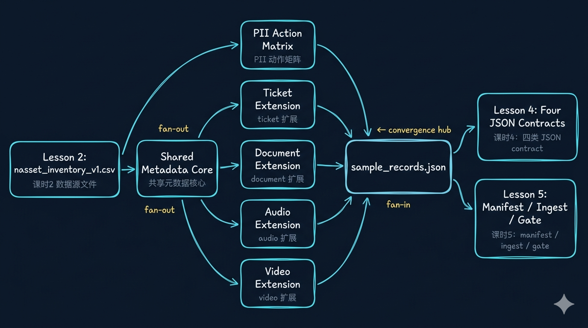
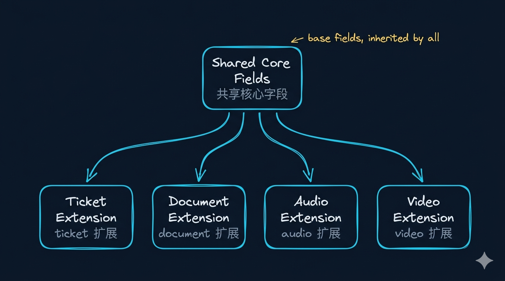

多模态最小元数据与 PII 分级：文档、音频、视频、工单怎么统一
Week02 · 教师演示
这一讲不再停留在“资产值不值得接”，而是把 Week02 真正推进到运行时标准层：metadata 是 runtime interface，PII 是动作矩阵，后面的 contract、manifest 和 ingest 都要消费这一层。
开场判断：这节课不是补字段，而是在定义系统接口
先立一个判断
今天先统一的不是“字段清单”，而是系统动作需要稳定依赖的最小上下文。后面 contract 和 manifest 只是把这层定义写成可执行门禁。
先把 3 句判断立住
metadata 先解决“回到哪里、归谁负责、允许做什么动作”。
PII 不该只是 true / false，而应该直接落成字段 × 动作矩阵。
如果这一层不先立住，课时4 的 contract 最后只会退化成“字段和类型没报错”。
从课时2接过来：对象建模之后，下一步是运行时上下文标准
Week02 课时链路
课时2 asset inventory
→
课时3 metadata minimum + PII policy
→
课时4 data contract
→
课时5 manifest + gate
→
Week03 ingest baseline
课时2回答“什么值得接”；课时3回答“接进来以后最低必须带什么上下文”；课时4、5才是在这个基础上把准入规则和批次意图写成门禁。
为什么今天不能直接跳到 contract
如果这一层没统一，最后的 contract 往往只剩“字段存在、类型正确”，却无法稳定约束检索过滤、引用回指、权限动作和审计追责。
这 5 个对象要怎么分工
| 对象 | 它回答什么问题 | 这节课先定什么 |
|---|---|---|
asset inventory |
哪些资源值得接入 | 值得接入的候选对象 |
metadata minimum |
每条内容最低必须带什么上下文 | 回指、过滤、版本、责任 |
PII policy matrix |
这类字段能做什么动作 | 存储、索引、入模、展示、工具 |
data contract |
什么样的记录可以放行 | 结构、语义、质量、边界 |
manifest |
这次具体接哪一批 source | 本次运行意图 |
先看一张运行时消费图：metadata 到底被谁消费
运行时消费图

metadata 不是“写得更完整”，而是给 runtime 模块提供它们真正会消费的上下文。字段少一层，后面的系统动作就会直接变形。
再把“谁消费什么”讲口语化一点
| metadata 字段 | 谁会消费它 | 它直接影响什么 |
|---|---|---|
access_scope |
retrieval / tool layer | 权限过滤是否有效 |
page_no / bbox / section_path |
citation / audit | 回答能不能回到原始位置 |
speaker_role / start_ts / end_ts |
review / HITL | 对话责任、片段定位 |
schema_version |
contract / compatibility | 演进感知、版本判断 |
pii_level |
policy engine | 能否入模、展示、传工具 |
为什么 metadata 必须先于 chunking
| 路线 | 看起来更快 | 真正的问题 |
|---|---|---|
| 先切块，后补 metadata | demo 起得快 | citation、filter、audit 都会补锅 |
| 先定 metadata minimum，再切块 | 前面稍慢一点 | 后面能稳定进入 contract / ingest / retrieval |
顺序判断：shared core 在前，chunk / segment 在后
顺序判断
shared core 先立住所有输入都必须带的字段
→
modality extension 再补 document / audio / video / ticket 差异
→
chunk / segment 最后才进入表达层拆分
→
contract / gate 把规则写成可执行准入
真正的统一方法：共享核心 + 模态扩展
统一方法

真正的工程统一，不是把四类对象压成一模一样，而是先立共享核心，再允许合理模态差异，最后叠一层动作策略。
先把共享核心字段立住
| 字段 | 为什么必须有 |
|---|---|
source_id |
标识契约对象类型 |
asset_type |
告诉系统它属于哪类输入 |
source_system |
知道它来自哪个业务系统 |
source_fingerprint |
判重、回指、版本对齐、审计 |
schema_version |
感知演进与兼容性 |
owner |
校验失败时先找谁 |
access_scope |
谁能搜、谁能看、谁能用 |
pii_level |
policy 的动作入口 |
observed_at |
业务时间 / 观测时间 |
先把这 3 句讲透
shared core负责统一治理和回指modality extension只补最少但关键的定位字段policy overlay把 PII、访问范围和工具边界叠到系统动作上
document：这类输入最低要补哪些字段
doc_iddoc_versionpage_nobboxsection_pathlicense_tag
audio：这类输入最低要补哪些字段
call_idspeaker_rolestart_tsend_tsconfidencepii_redaction_flag
video：这类输入最低要补哪些字段
video_idsegment_tsframe_tstranscript_refimage_captionocr_text
ticket：这类输入最低要补哪些字段
坏样本真正可怕的地方：不是字段少，而是系统动作会失效
| 模态 | 坏样本通常少了什么 | 真正后果 |
|---|---|---|
document |
page_no / bbox / section_path / doc_version |
citation 失真，审计只能凭感觉解释 |
audio |
speaker_role / start_ts / end_ts / pii_redaction_flag |
责任归因失效，回听和脱敏动作一起漂 |
video |
segment_ts / frame_ts / image_caption / ocr_text |
视觉证据链断裂，命中后也落不到正确片段 |
ticket |
tenant_id / event_time / schema_version / owner |
多租户边界和增量判断一起漂移 |
把坏样本问题收成一句判断
PII 不该写成 true / false，而要先把等级讲清楚
| 等级 | 典型字段 | 默认判断 |
|---|---|---|
public |
公告、公开文档标题 | 可存、可索引、可展示 |
internal |
内部流程、产品配置 | 可存、受控索引、受控展示 |
sensitive |
电话、邮箱、工单细节 | 受限索引、受限入模、默认不直出 |
restricted |
身份证号、支付标识、强鉴权字段 | 默认不入模，不传工具，高风险隔离 |
先把这一层判断收住
PII 的工程表达，不是停留在“敏感 / 不敏感”的标签，而是明确这些等级在系统里会触发什么默认动作。
public：可以直接进入默认消费链internal：可以消费，但要受角色和范围控制sensitive：允许受限存储，不默认进入模型和展示restricted：默认不入模、不传工具，先隔离
PII 最后要落成字段 × 动作矩阵
| 字段 | 原文存储 | 索引 | 入模 | 展示 | 传工具 |
|---|---|---|---|---|---|
customer_email |
受控 | 脱敏后 | 默认否 | 默认否 | 默认否 |
phone_number |
受控 | 脱敏后 | 默认否 | 默认否 | 默认否 |
device_serial |
受控 | 可 | 受限 | 受限 | 受限 |
doc_section_title |
可 | 可 | 可 | 可 | 可 |
两种策略怎么选：先脱敏再消费，还是保真存储 + 查询裁剪
- 优点：入模和展示风险更低
- 代价：证据保真度下降
- 适合：高风险输入、公开面向广角色的消费链
- 优点：审计、回指、复盘更扎实
- 代价：查询时必须严格执行 policy
- 适合：需要完整证据链和受控审计的系统
Week02 默认判断：先别把证据层削薄
原因很直接：这门课后面要接 contract、manifest、ingest、citation 和 tracing。先把证据层削薄，后面几乎只会更难补回来。
行业新信号：这不是课程自创术语，而是企业 AI 工程现实
越来越强调结构保真、多模态检索和 hybrid filtering。这意味着 metadata 已经不是“附属说明”，而是运行时过滤层。
统一文档对象越来越强调 hierarchy、bounding boxes、provenance。这正说明 page_no / bbox / section_path 是基础设施，不是增强项。
可以识别和匿名化 text、image、structured data。但自动识别不等于自动合规，最后仍要回到动作矩阵和系统边界。
这节课其实在定义后续系统接口
与后续系统能力的关系
课时3 metadata minimum + PII policy
课时4 JSON contract
课时5 manifest + gate
Week07–08 evidence chain + RAG citation
Week10 / 14 tool boundary + release / audit / tracing
今天立住的是未来系统的 runtime interface。后面的 contract、manifest、citation、tool boundary 和 tracing，都会持续复用这层定义。
进入仓库前，只确认 3 件事
docs/blueprints/week02/metadata_minimums_v1.md：把 shared core 和四类扩展写实docs/blueprints/week02/pii_policy_matrix_v1.csv：把字段动作矩阵写实tests/contract/fixtures/week02/sample_records.json：给下一讲 contract 和 tests 提供样例输入
先打开这 3 份文件
把本地动作翻译回方法论
| 本地动作 | 方法论含义 |
|---|---|
写 metadata_minimums_v1.md |
先把 runtime interface 立住 |
写 pii_policy_matrix_v1.csv |
把 PII 从标签升级成动作策略 |
整理 sample_records.json |
给下一讲 contract 和 tests 提供真实样例 |
保留 page_no / start_ts / frame_ts |
给 citation、audit、review 留抓手 |
保留 source_fingerprint / schema_version |
给兼容性和追溯留抓手 |
接课时4：当 metadata 和 policy baseline 立住以后，contract 才真正有厚度
进入课时4
有了 shared core、模态扩展和动作矩阵，下一讲才能把 shape / semantics / metadata / policy / quality 一起写成真正可执行的 Data Contract。
本课提醒
metadata 是 retrieval、citation、audit、tool boundary 会直接消费的接口层。
PII 的工程表达应该是字段 × 动作矩阵，而不是只写 true / false。
今天写下来的三份工件，会直接流入课时4、课时5和 Week03 ingest baseline。